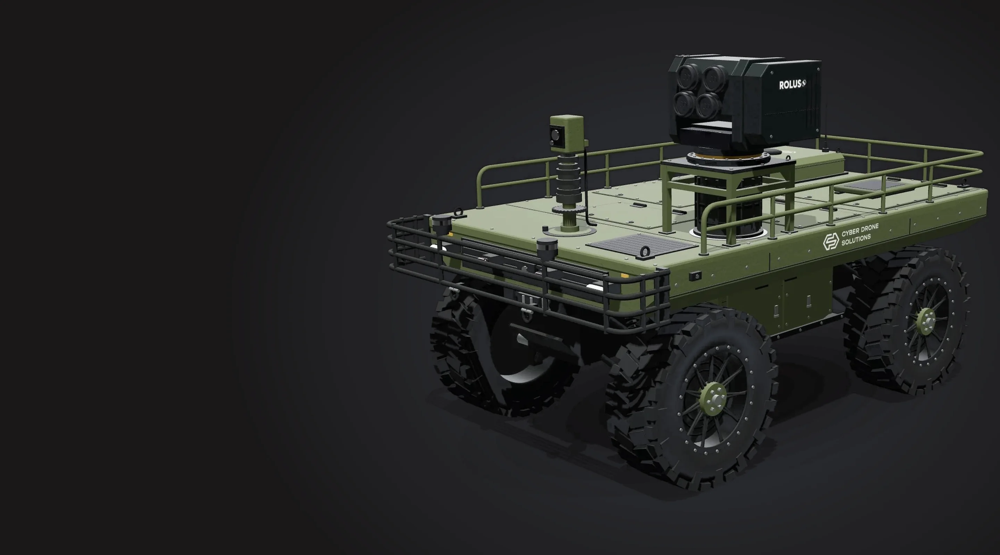
Ground · 4×4 electric UGV · Cyber Drone Solutions
Specthor
One vehicle. Five missions.
1,000 kg payload · 8 h · 40 km/h · 15 km control range
Explore Specthor →Configure in 3D
Cyber Drone Solutions · Prague, Czech Republic
Ground robots, aircraft and counter-drone systems, customised to your mission and tied into one ground station. For defence, security, fire and rescue, and critical infrastructure.

One vehicle. Five missions.
1,000 kg payload · 8 h · 40 km/h · 15 km control range

Fight fire from a safe distance.
Hecthor II: 1,500 l/min · approx. 57 m water reach · 80 kW electric drive · up to 10 h

Combat proven. Built to save lives.
3,000+ in use · 40 km range · STANAG 2920

Detect. Track. Identify. Defeat.
15 km RF detection (ideal) · 150+ drone models · 360°

No runway. No pilot. Four hours aloft.
50 kg payload · up to 4 h · 100 km · mobile GCS

Fly further. See better.
3 h endurance · 40 km datalink · 80× EO zoom
Meet us in person
Cyber Drone Solutions exhibits at the Future Forces Exhibition & Forum in Prague. Book a meeting with our team to discuss your requirement, see the systems and plan a live demonstration.
Solution finder
Choose the task. We show the systems that fit, each with a ready configuration you can open in 3D, watch in a live demonstration and send to us.
How we work
We start from your operational profile, not from a catalogue: the right platform, the payloads you need, and one ground station to run it all.
We choose the platform that fits the environment, the threat and the operational profile.
We integrate sensors, EO/IR cameras, weapon stations, autonomy packages and specialised payloads.
Everything is tied into a ground station with one user experience, human in command.
Training, delivery, operation and support, agreed in the contract.
Multispectral cameras, LiDAR, cargo modules, chemical detectors and robotic arms.
Autonomous navigation, obstacle avoidance, GPS-denied operation and mission automation.
Secure data storage with connectivity, real-time processing and geo- and time-indexing.
Operator-focused interface, unified mission control and context-aware alerts.
Who we work for

Logistics, casualty evacuation, ISR, fire support and counter-drone protection, at the front and in the rear.


Border patrols, observation posts, event security and drone detection.

Drone detection, inspection and mapping for energy, airports, ports and industrial sites.
Partners
We work with technology partners in their fields and take responsibility for integration, delivery and support.
For defence, government and industry buyers
A clear route from first contact to a system in service, with the documentation procurement teams need at each step.
Tell us the mission, terrain, quantities and timeline. Technical discussions can take place under a non-disclosure agreement.
A live demonstration of the systems you are evaluating, at your site, at ours or at an exhibition.
Configuration, quotation and delivery schedule, with the export and end-user documentation required for your country.
Training, delivery, operation and support, agreed in the contract.
Contact
Tell us about your mission. The sales team replies to you directly.
Unmanned ground vehicle
One platform. Five missions.
A rugged 4×4 electric UGV from Cyber Drone Solutions, built for perimeter and border security. Change the mission module and keep the vehicle: surveillance, casualty evacuation, CBRN reconnaissance, logistics or the turret configuration.
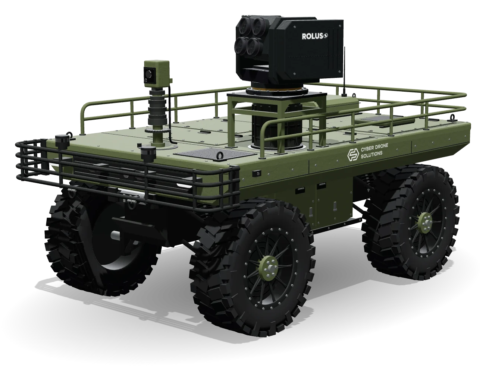
Figures as published by Cyber Drone Solutions. Developed in the Czech Republic, built from EU-made components.
Platform
Specthor keeps the same chassis, running gear and deck in every role. Mission equipment mounts on two interfaces, so changing the role does not change the vehicle.
Technical specification as published by Cyber Drone Solutions. Dimensions shown in the 3D configurator are estimated from the model.
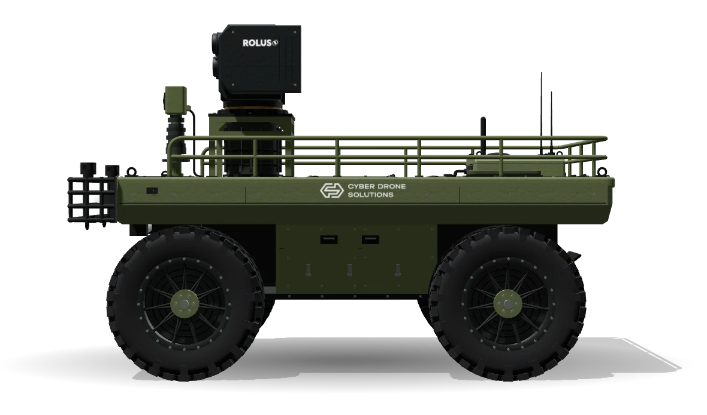
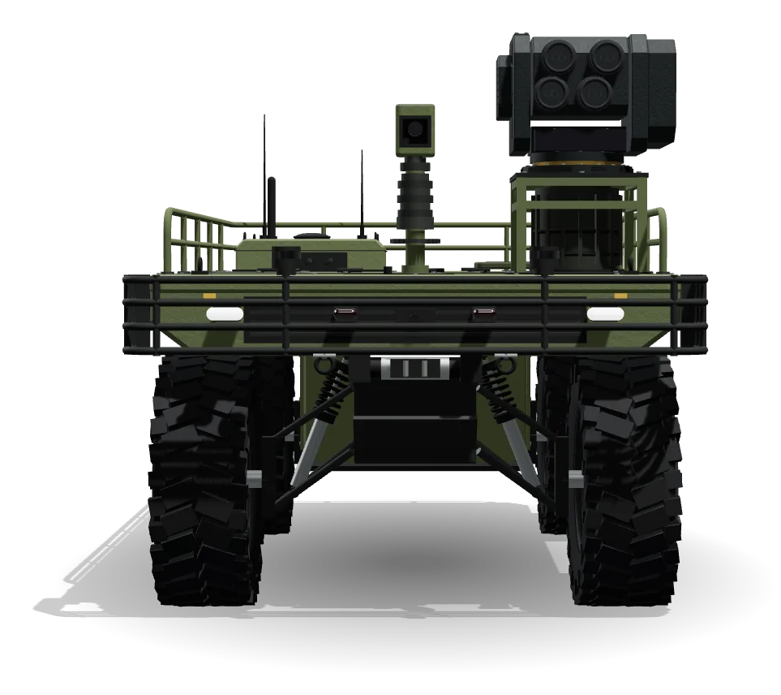
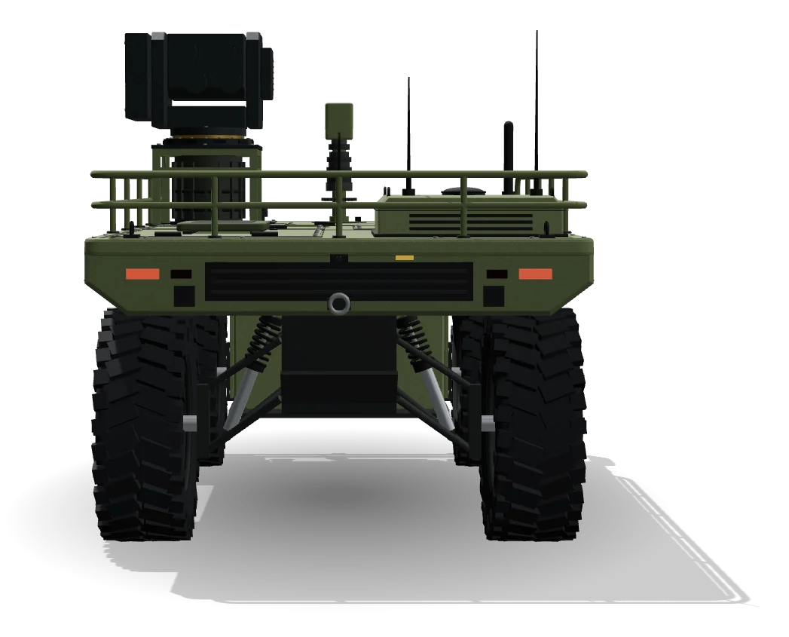
Missions
Each mission module is a separate unit on the same Specthor. Select a mission to see what it carries, then open it in the configurator.
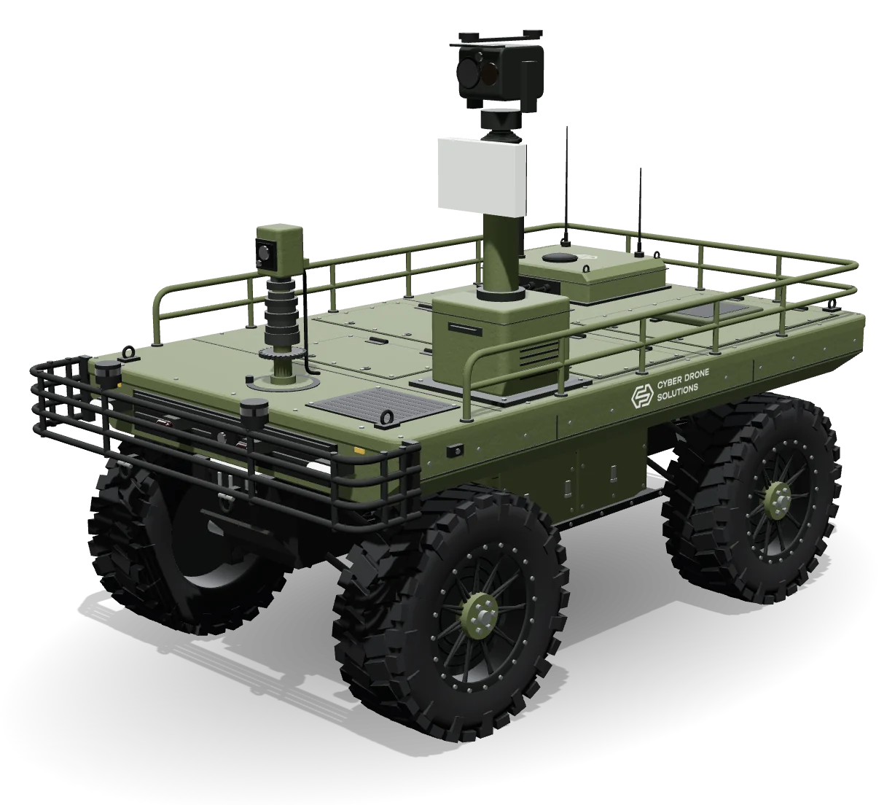
Protection and survivability
The defence kit adds bolt-on protection, awareness and recovery equipment without changing the vehicle. Each item reflects what current ground robots need in the field.
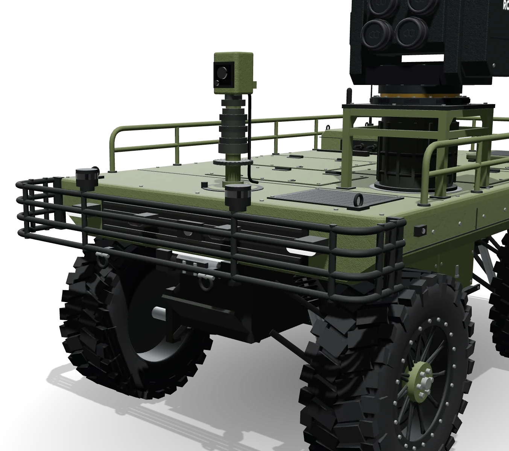
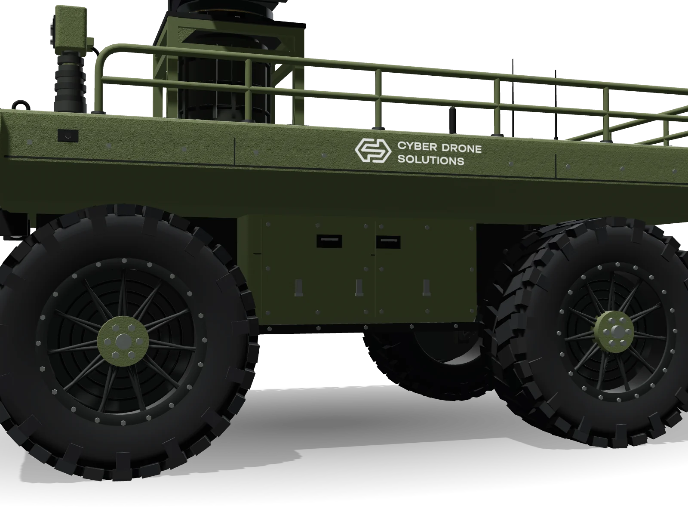
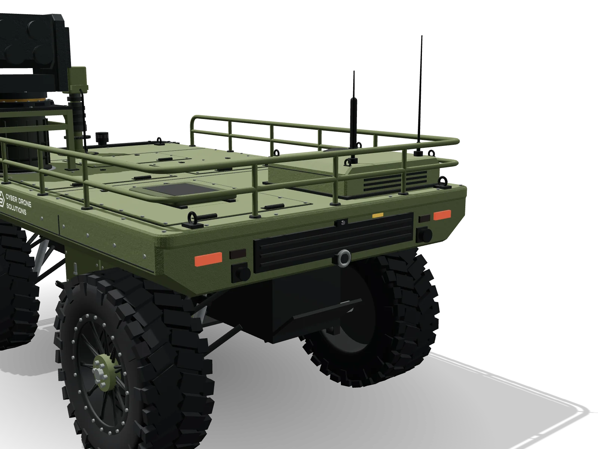
Protects the underside against mine and IED blast and rough ground.
Bolt-on panels over the battery and payload box.
Side and rear cameras plus two navigation lidars on the bumper.
IR illuminators, blackout convoy markers and IR brake lights.
Winch, front shackles, NATO slave socket and 12-pin trailer socket.
Keep the tyre on the rim at low pressure or when damaged.
Anti-jam GNSS, MANET radio antenna and a low-profile SATCOM terminal.
Optional steel mesh canopy over the rear deck against FPV drones.
ConceptDefence-kit items are design concepts and need engineering confirmation.
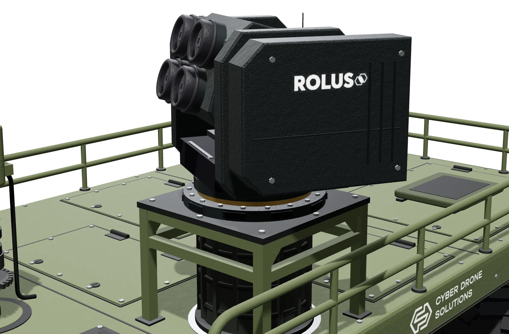
Turret configuration
The original Specthor configuration carries the Rolus RFL-80 rapid-fire launcher on a raised traverse stand. Four 80 mm tubes sit in an elevating pod between two yoke arms.
RFL-80 is a product of Rolus.
Configurator
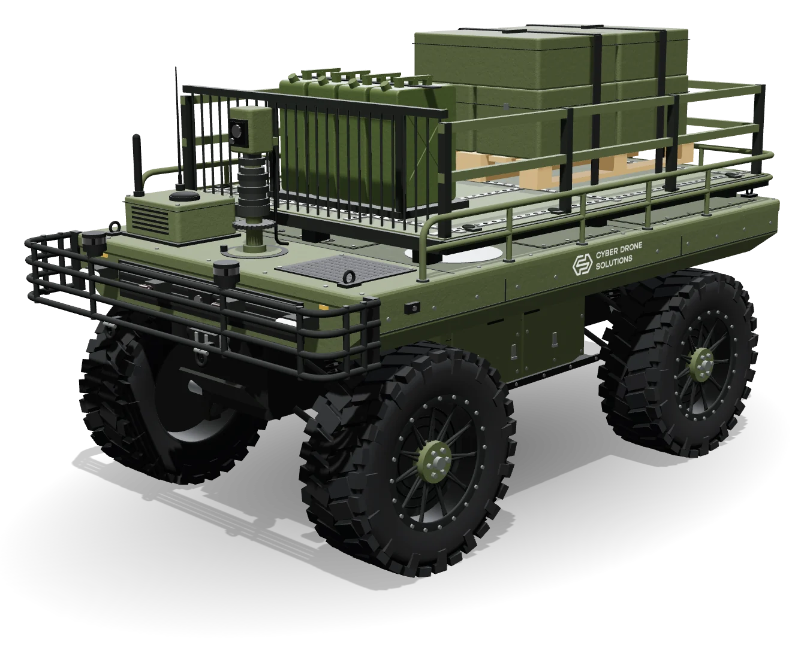
For defence and government buyers
A clear route from first contact to a Specthor in service, with the documentation procurement teams need at each step.
Tell us the mission, terrain, quantities and timeline. Technical discussions can take place under a non-disclosure agreement.
A live demonstration of the vehicle and the mission modules you are evaluating.
Configuration, quotation and delivery schedule, with the export and end-user documentation required for your country.
Operator and maintainer training, spare parts and technical support, agreed in the contract.
Contact
Ask for a quotation or a live demonstration. If you build a configuration first, it is attached to your request automatically. The sales team replies to you directly.
Multifunctional tracked robot
Where it is too dangerous to send people.
A rugged tracked UGV for firefighting, rescue, logistics and reconnaissance, built for remote control and supervised autonomy. It keeps the operator in control even in complex, low-visibility environments.
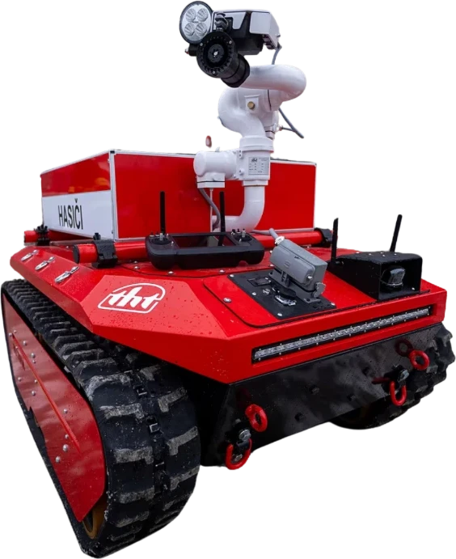
Platform figures as published by Cyber Drone Solutions.
Platform
Hecthor combines a terrain-capable tracked platform with modular mission kits. Reconnaissance, logistics support, evacuation and firefighting run on the same vehicle, with advanced sensing and assisted navigation.
Technical specification as published by Cyber Drone Solutions. 100% made in the EU.


Hecthor II · Firefighting
The Hecthor II firefighting configuration pairs a robust electric chassis with a powerful monitor and long water reach, for fires where sending firefighters in would be too risky.
Figures for the Hecthor II firefighting configuration, announced 25 November 2025.
Missions
Each mission kit fits the same Hecthor platform. Select a mission to see what it carries, then open it in the configurator or watch it work.
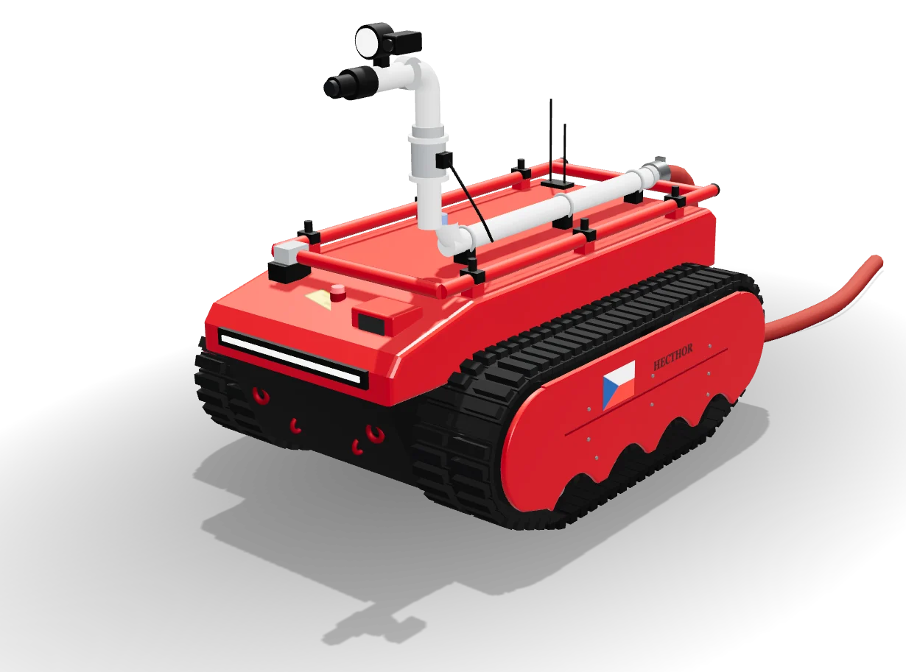
Where Hecthor works
Remote firefighting in industrial sites and warehouses.
Fires involving chemicals, fuels and pressure vessels.
Work in smoke-filled or structurally unstable buildings after a fire or explosion.
Transport of materials, hoses and equipment into hazardous zones instead of firefighters.
Support for rescue and technical operations in rubble and hard-to-access terrain.
Live camera and thermal feeds to assess a site before anyone goes in.
Bringing casualties out without putting first responders at risk.
Missions with minimal post-operation decontamination requirements.
In the field

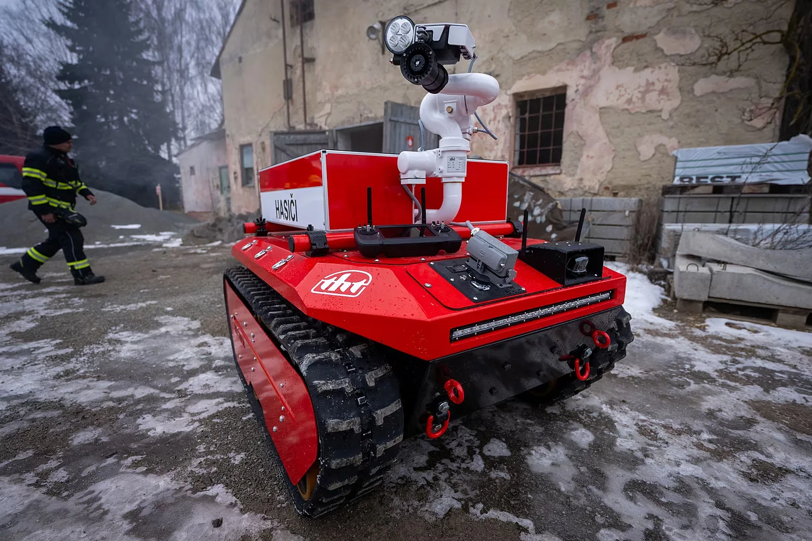

Made in Czechia
Hecthor II was developed by two Czech companies: the Prolab Engineering team, joined by engineers from THT Polička who brought their experience in firefighting technology.
Cyber Drone Solutions integrates Hecthor into one mission system with UAVs, payloads and autonomy: a human-in-command approach, with sensor inputs fused into one operational picture.
Configurator

For fire services, defence and government buyers
A clear route from first contact to a Hecthor in service, with the documentation procurement teams need at each step.
Tell us the mission, terrain, quantities and timeline. Technical discussions can take place under a non-disclosure agreement.
A live demonstration of the robot and the mission kits you are evaluating.
Configuration, quotation and delivery schedule, with the export and end-user documentation required for your country.
Training, operation, delivery and support, agreed in the contract.
Contact
Ask Cyber Drone Solutions for a quotation or a live demonstration of Hecthor. The sales team replies to you directly.
Autonomous unmanned helicopter system
Airborne autonomy. Monitoring beyond limits.
A fully autonomous VTOL helicopter for missions with no runway, no qualified pilot and no conventional infrastructure: long-endurance surveillance, border protection, rescue support and infrastructure inspection.
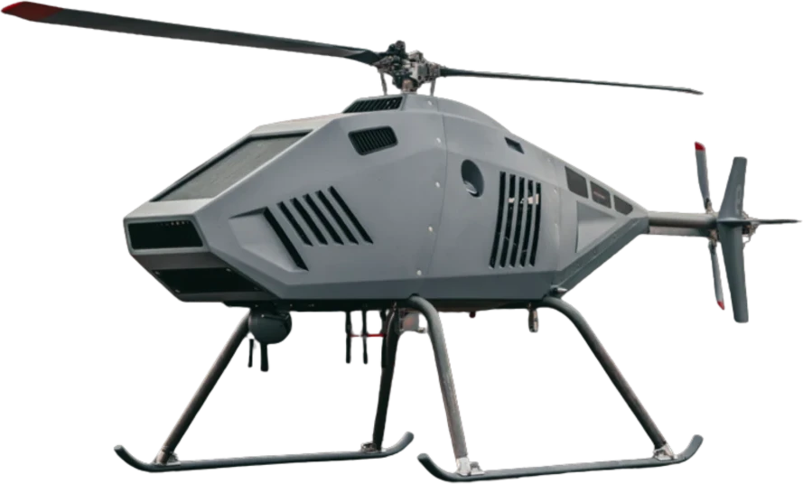
Figures as published by the manufacturer (heliaz.eu) and Cyber Drone Solutions.
Platform
Heliaz is the result of many years of development and experience from both the private sector and the military. It combines vertical take-off, long endurance, reliability, modularity and a high payload.
Technical specification as published on heliaz.eu.
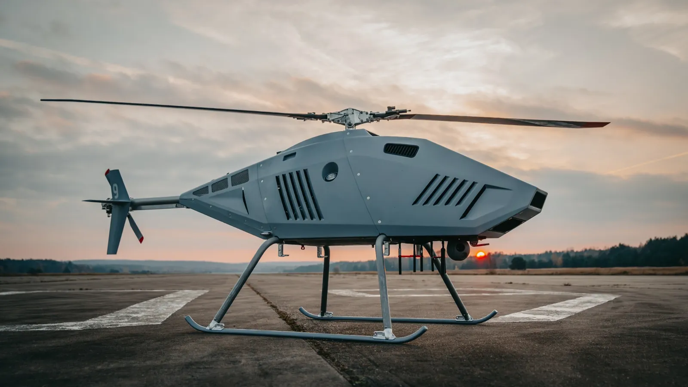


Complete system
Heliaz is delivered as a complete package: the helicopter, a mobile ground control station on a Sprinter 4×4 and the dual datalink. It drives to the mission, rolls off the rear platform and takes off.
Missions
Defence and security, rescue missions and the civil sector. Select a mission to see what it carries, then open it in the configurator or watch it fly.
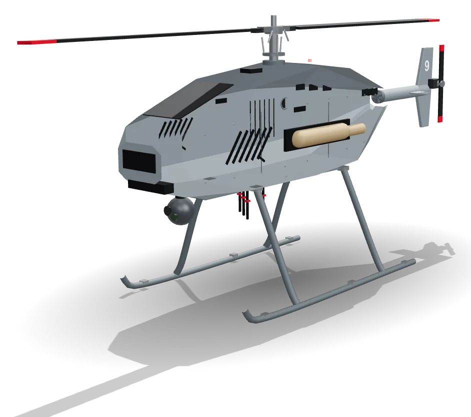
Mobile ground control station
Two pilot consoles with four displays, joysticks and keyboards, an extra mission screen, and a telescopic mast for the datalink. The Sprinter 4×4 carries Heliaz on a rear platform with a ramp, so the crew deploys without a hangar.


Applications
Long-endurance ISR with the EO/IR gimbal and live video to command.
Tactical border and perimeter security on pre-defined patrol routes.
Radio-spectrum monitoring and electronic warfare tasks.
Eyes overhead and a communication bridge for units on the ground.
Thermal search over forests, water and disaster areas.
Monitoring of wildfires and forest fires, and environmental incidents.
Protection and inspection of power lines, pipelines and sites.
2D and 3D mapping (LiDAR, photogrammetry), geological survey, agriculture and spraying.
Built to standards
As stated by the manufacturer on heliaz.eu.
Gallery


Configurator

For defence, security and rescue buyers
Complete mission planning, operator training and field support, with the documentation procurement teams need at each step.
Tell us the mission, airspace, terrain and timeline. Technical discussions can take place under a non-disclosure agreement.
A flight demonstration of the platform and the payloads you are evaluating.
Configuration, quotation and delivery schedule, with the export and end-user documentation required for your country.
Mission planning, operator training and support in the field.
Contact
Contact us for a technical briefing and a live platform demonstration. The sales team replies to you directly.
Counter-UAS · DroneShield partner
Detect. Track. Identify. Defeat.
AI-driven counter-drone systems for fixed sites, vehicles and dismounted teams: passive RF detection with the RFAI engine, radar and camera layers fused by SensorFusionAI, and software-defined disruption that makes a hostile drone land or return home.
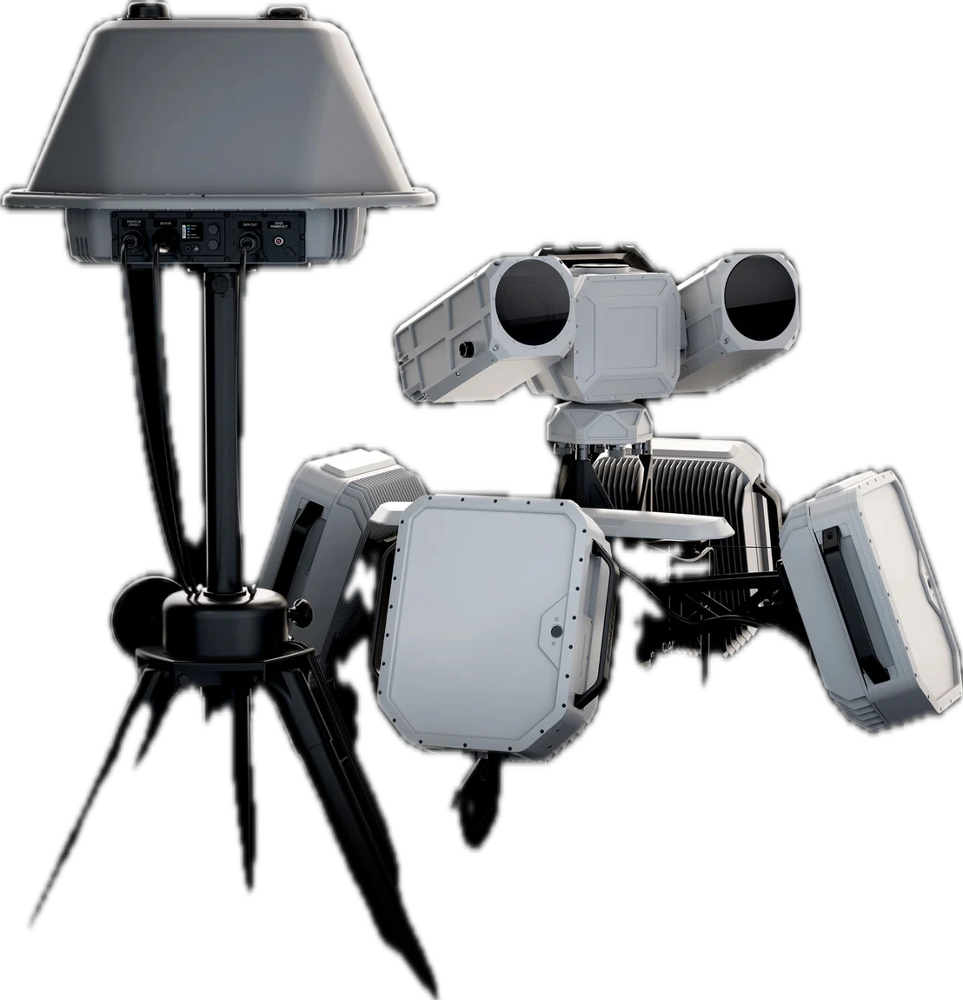
Figures as published by DroneShield and Cyber Drone Solutions. Ranges are for ideal conditions; typical RF detection is around 3 km.
The kill chain
Every DroneShield solution follows the same chain, from the first RF signal to a drone on the ground. The C2 software keeps the operator in the loop at every step.
Passive RF sensing picks up control, video and telemetry links from 433 MHz to 5.8 GHz, day and night, without emitting.
Radar and bearing data give range, altitude, speed and heading. Tracks persist as the drone moves through the coverage.
The RFAI engine classifies the drone type from its signal; a PTZ or EO/IR camera adds visual confirmation.
Software-defined disruption of control, video and GNSS links. The drone lands in place or returns home, intact for forensics.
Layered defence
DroneSentry combines sensors and effectors into one modular installation. SensorFusionAI merges their tracks, so the operator sees one drone, not three alarms.
Solutions
Fixed sites, vehicles, expeditionary bases and teams on foot. Select a deployment to see what it includes, then open it in the configurator or watch the scenario.
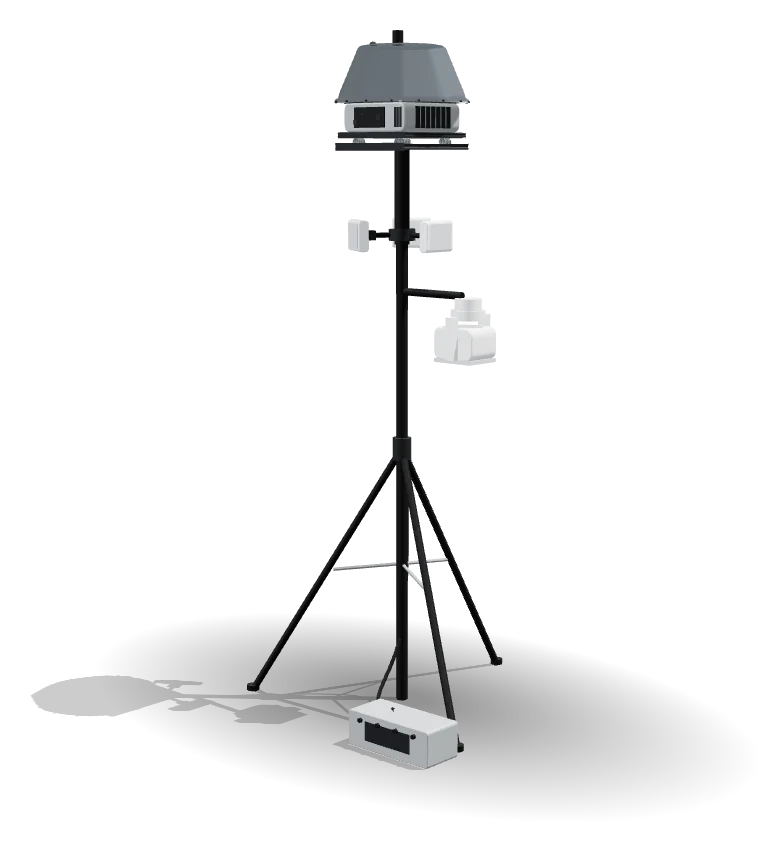
DroneSentry-X Mk2
Full hemispheric detection with simultaneous adaptive, omnidirectional disruption in a single unit. It mounts on a site mast, a tripod or a standard vehicle roof rack.
Specification as published by DroneShield.


Sensor layers
DroneSentry integrates third-party radars and cameras alongside the RF layer. Choose the layers your site needs; SensorFusionAI fuses them into one track.

Compact ESA radar, three panels for 360°.

Medium-range Ku-band ESA radar.

Long-range S-band AESA radar.

Ruggedised PTZ camera for visual confirmation.

EO/IR camera for long-range confirmation.

Power and data hub for the sensor mast.
Third-party sensor figures as published in DroneShield product sheets.
Dismounted
The Immediate Response Kit puts detection and defeat in one rugged case: RfPatrol Mk2 on the chest warns of a drone, DroneGun Mk4 takes it down.


Command and control
DroneSentry-C2 brings every sensor and effector onto one map: tracks, alerts, zones, video and reports, on-premises or on a rugged tablet in the field.


Where it protects


Gallery


Regulation
Ownership and operation of disruption devices is controlled in many jurisdictions. Detection-only products such as SentryCiv, RfPatrol and RfRecon are passive and do not transmit. We help you confirm what is permitted for your organisation and country before you order, and deliveries are subject to the applicable export licences and end-user certification.
Configurator

For defence, security and infrastructure buyers
Cyber Drone Solutions is a DroneShield partner. We assess the threat, design the layers, deliver, install and train your operators.
Tell us the site, the vehicles or the unit, the airspace and the legal framework you operate in. Technical discussions can take place under a non-disclosure agreement.
A demonstration of detection and, where the law allows, disruption with the products you are evaluating.
Layer design, configuration, quotation and delivery schedule, with the export and end-user documentation required for your country.
Site installation, C2 integration, operator training and support.
Contact
Contact us for a threat assessment and a live counter-drone demonstration. The sales team replies to you directly.
Multirole eVTOL · C-Astral partner
Fly further. See better.
A compact electric VTOL with a blended wing body: it takes off from a 3 × 3 m clearing, flies up to 3 hours on the wing and carries a stabilised EO/IR gimbal or a LiDAR. For ISR, fire control, search and rescue, mapping and infrastructure patrols up to 40 km from the GCS.
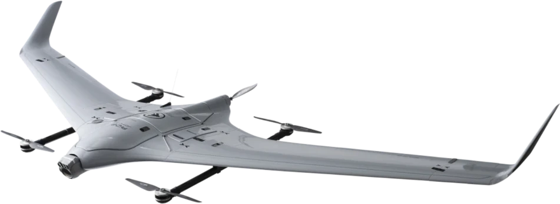
Figures as published by C-Astral Aerospace. Endurance up to 3 h with high-capacity batteries at ICAO standard atmosphere, depending on configuration.
Platform
Developed by C-Astral's X-Works laboratory on more than 140,000 flight hours of BRAMOR and ATLAS experience. Four lift motors on detachable booms lift it vertically; the rear pusher and the blended wing body carry it efficiently for hours.
Specification as published by C-Astral Aerospace (SQA brochure and c-astral.com).


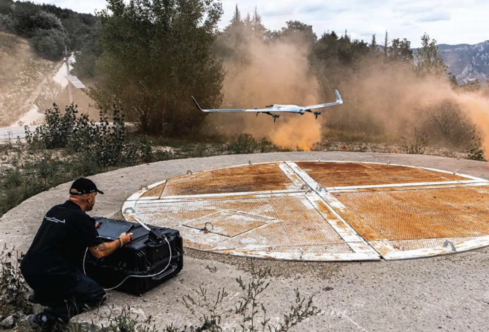

Complete system
The SQA is delivered with its tablet GCS, the SX 303 communication unit, the C3P software, spares, charger and a rescue parachute, all in one MIL-STD-810G transport case.
Missions
Defence and security, public safety, remote sensing and infrastructure. Select a mission to see its payload, then open it in the configurator or watch the full flight.
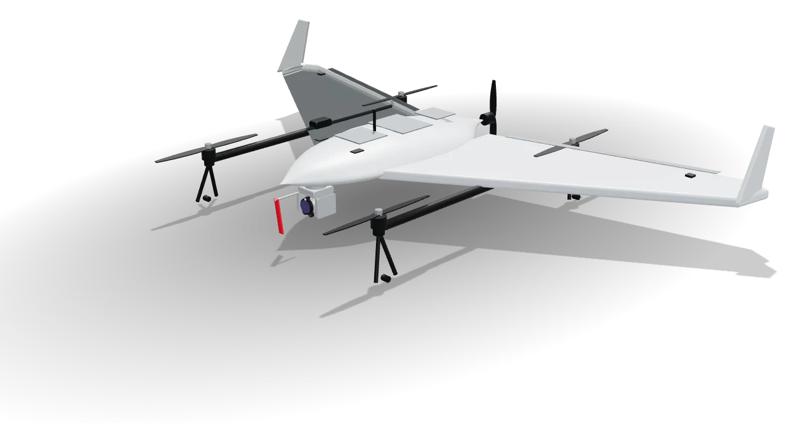
Sensors
Stabilised EO/IR gimbals for ISR and patrol, and a survey-grade LiDAR for mapping, all interchangeable in the nose of the central module.

EO/IR/LI gimbal for ISR and fire control.

Lighter EO/IR gimbal for patrol and monitoring.

Lightweight long-range UAV LiDAR.
Sensor figures as published by C-Astral.
C3P and datalink
C3P (Command, Control, Communications and Planning) runs on a sunlight-readable rugged tablet: plan the mission, control flight and sensors in real time, and collect geospatial data.


Options and extras

Secure mobile ad hoc networking and relay. TSM-X waveform, SOCOM approved, 1775–1815 and 2200–2250 MHz.

Visible to cooperating traffic and ATC. ADS-B Out on 978 or 1090 MHz, ADS-B In optional.
VHF beacon and handheld receiver: 7 days autonomy, up to 10 km range.

Portable GCS and repeater: live video, 12 encrypted voice channels, 8 h battery, MIL-STD-810G.

15.6" 1,000-nit display, integrated joystick and IP datalink, hot-swappable batteries up to 4 h, MIL-STD-461F / 810G, IP65.

LiDAR point clouds, orthophotos and terrain models, with EO, thermal and multispectral mapping cameras.
Applications
Military-level ISR, night surveillance, moving-target detection and tracking.
JTAC call for fire, fire direction, target acquisition for indirect fire and CAS.
Large-area and border surveillance, over-the-hill observation, low intensity conflict zones.
Target geo-tagging over Cursor on Target into ATAK and BMS networks.
First responders, firefighting, civil defence and flood monitoring.
Aerophotogrammetry, LiDAR and scientific atmospheric sensing, including gas leaks.
Pipeline monitoring, infrastructure control and wildfire management.
Woods and landscape management, anti-poaching patrols.
Built to standards
As stated by C-Astral Aerospace. Red Dot winner 2024, best of the best.
Gallery


Configurator

For defence, security and survey buyers
Cyber Drone Solutions presents C-Astral's SQA eVTOL as a partner, with mission planning, operator training and support in the field.
Tell us the mission, the airspace, the terrain and the networks the video must reach. Technical discussions can take place under a non-disclosure agreement.
A live flight with the payloads you are evaluating, from take-off to landing.
Configuration, quotation and delivery schedule, with the export and end-user documentation required for your country.
Operator training at C-Astral, documentation and manuals, spares and support.
Contact
Contact us for a technical briefing and a live flight demonstration. The sales team replies to you directly.
Tencore · Next-generation Ukrainian UGV
Built to save lives.
Built on real combat experience, with a modular architecture for logistics, evacuation and engineering missions. Deployed where human risk is too high. Cyber Drone Solutions presents TerMIT 2.0 as a Tencore partner.
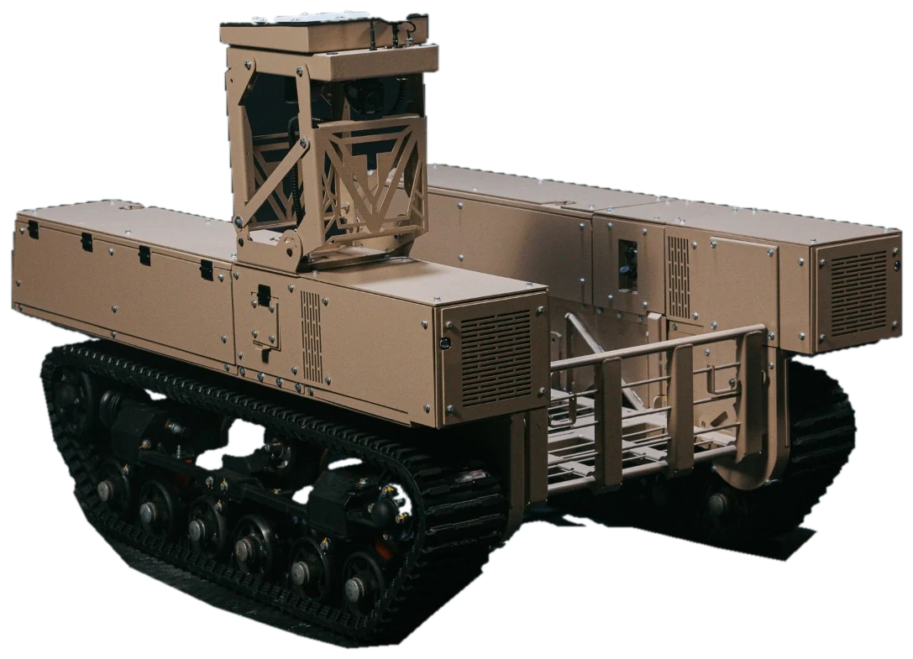
Figures as published by Tencore. Weight ±20 kg, payload ±10 kg.
Platform
A modular tracked platform with an electric powertrain and day, night and thermal cameras as standard. Logistics, evacuation, engineering and combat modules fit the same platform.
Technical specifications as published by Tencore.
Mission modules
Modules for logistics, evacuation, engineering and combat operations. Pick a mission, then a module, and open it in the 3D configurator.
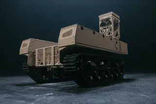

Engineering
The Egoza module deploys concertina wire without putting a crew in the open: up to 25 m per wire and up to 100 m with four wires, in about 15 minutes.


Evacuation
The armoured evacuation module takes a standard stretcher on a secure fixation system. A thermal camouflage cover lowers the platform's signature on the way back.
Combat operations
The same platform carries the Burya station with a Browning M2 or an MK19 grenade launcher, or the stabilised 7.62 mm Khyzhak module, all operated remotely.
Combat proven
According to Tencore.


Images and deployment accounts published by Tencore.
Autonomy, quality, support
Autonomous course holding, so the platform moves without constant operator control.
Automatic turn-back and return if the signal is lost.
ISO 9001:2015 and AQAP 2110:2016.
On-site and remote technical support, extended online support and a 6-month warranty.
Configurator

For defence and government buyers
A clear route from first contact to a TerMIT 2.0 in service, with the documentation procurement teams need at each step.
Tell us the mission, terrain, quantities and timeline. Technical discussions can take place under a non-disclosure agreement.
A live demonstration of the vehicle and the mission modules you are evaluating.
Configuration, quotation and delivery schedule, with the export and end-user documentation required for your country.
Operator training, on-site and remote technical support, extended online support and a 6-month warranty, as offered by Tencore.
Contact
Ask Cyber Drone Solutions for a quotation or a live demonstration of TerMIT 2.0. The sales team replies to you directly.
The CDS portfolio
Ground robots, aircraft and counter-UAS from one integrator, combined into one mission system with a single operational picture.
Perimeter security, turret, CASEVAC, CBRN and logistics on one 4×4 electric vehicle.
View Specthor →Firefighting at 1,500 l/min, rescue, logistics and reconnaissance where it is too dangerous to send people.
View Hecthor →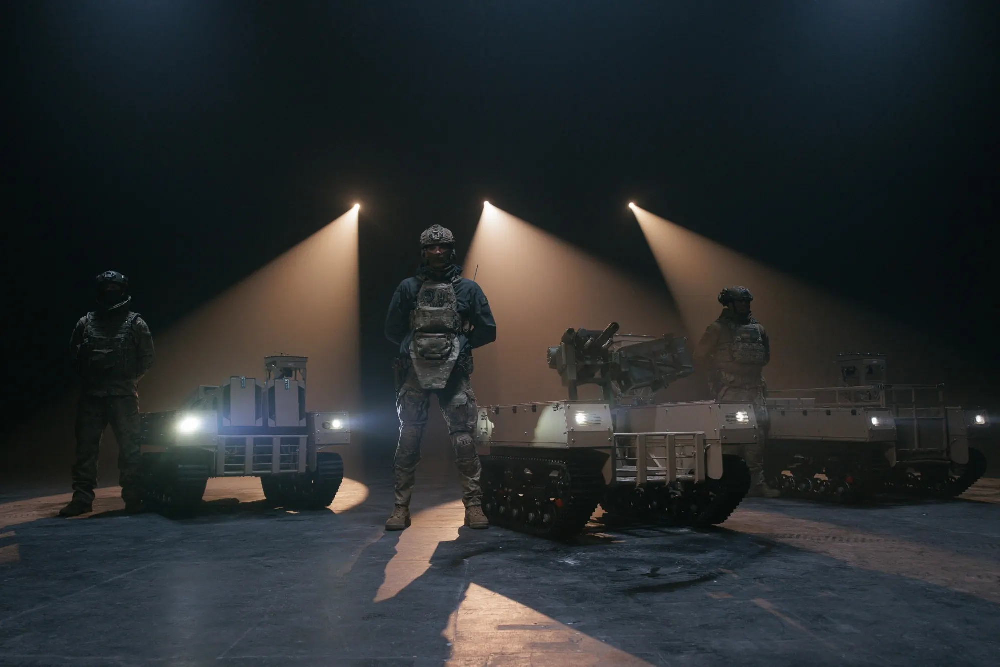
Combat-proven modular UGV: logistics, evacuation, engineering and remote weapon stations.
View TerMIT 2.0 →Autonomous VTOL helicopter: 4 h endurance, 50 kg payload, delivered with its mobile GCS.
View Heliaz →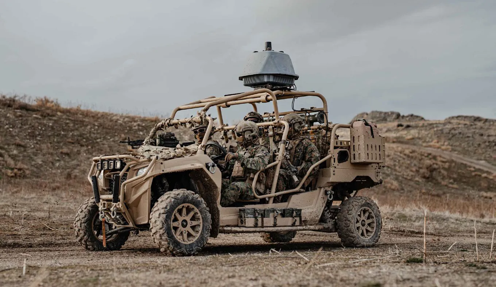
Detect, track, identify and defeat drones: fixed sites, vehicles and dismounted teams.
View DroneShield →Electric VTOL fixed wing: 3 h endurance, 80× EO/IR or LiDAR, ready to fly in 5 minutes.
View SQA eVTOL →